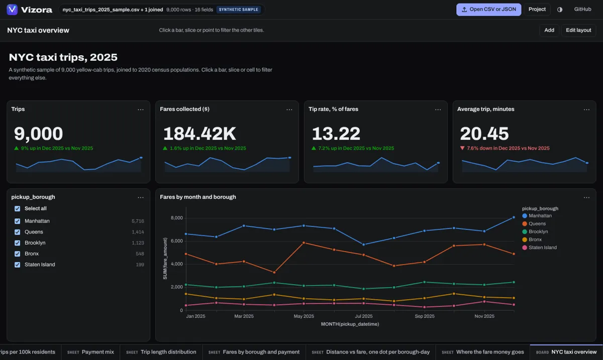

01Business intelligenceLive
Vizora
Tableau-style charts and Power BI-style dashboards, free and open source, running entirely in the browser. Drop in a CSV, drag fields onto shelves, write calculated fields and cross-filter. Your data never leaves your device.
- Engine
- Columnar, typed arrays, no eval
- Ships as
- Web + Mac/Win/Linux (~2 MB)
- JavaScript
- Vega-Lite
- Papa Parse
- Tauri
- PWA